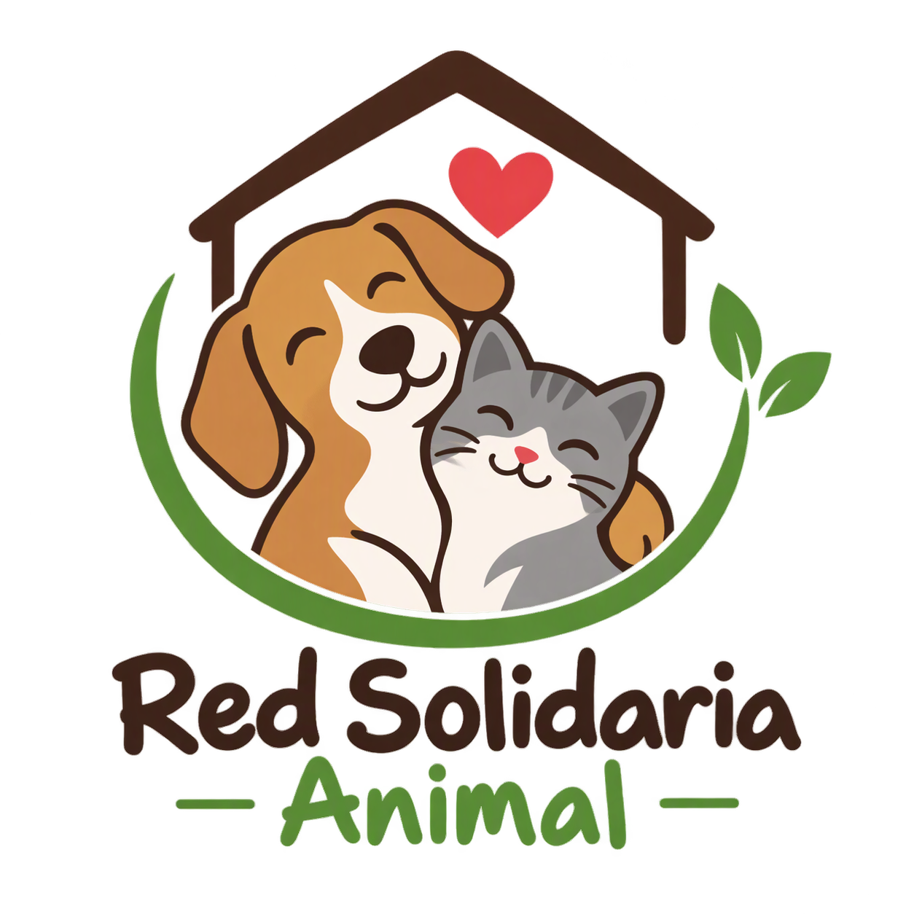

En atención veterinaria
El animal recibe evaluación, tratamiento o supervisión de personal veterinario.

Consulta los casos atendidos por la red y el estado actual de cada animal.
La tabla contiene información básica sobre los animales reportados, su urgencia y el seguimiento que se ha realizado.
| Código | Nombre provisional | Categoría | Urgencia | Sector | Estado actual |
|---|---|---|---|---|---|
| RSA-101 | Caramelo | Perro | Alta | Parque La Esperanza | En atención veterinaria |
| RSA-102 | Miel | Gato | Media | Barrio Los Almendros | En recuperación |
| RSA-103 | Kiara | Fauna Silvestre | Alta | Vía rural | Derivado a entidad especializada |
| RSA-104 | Chocolate | Perro | Baja | Ciudadela El Bosque | En hogar temporal |
| RSA-105 | Thom | Gato | Baja | Sector comercial | Disponible para adopción |
El animal recibe evaluación, tratamiento o supervisión de personal veterinario.
El caso se encuentra estable, pero todavía requiere cuidados y seguimiento.
El animal permanece en un espacio provisional mientras se define una solución permanente.
El animal ha completado su recuperación y puede iniciar un proceso de adopción responsable.
Si encontraste un animal que necesita ayuda, utiliza el formulario para registrar la información.